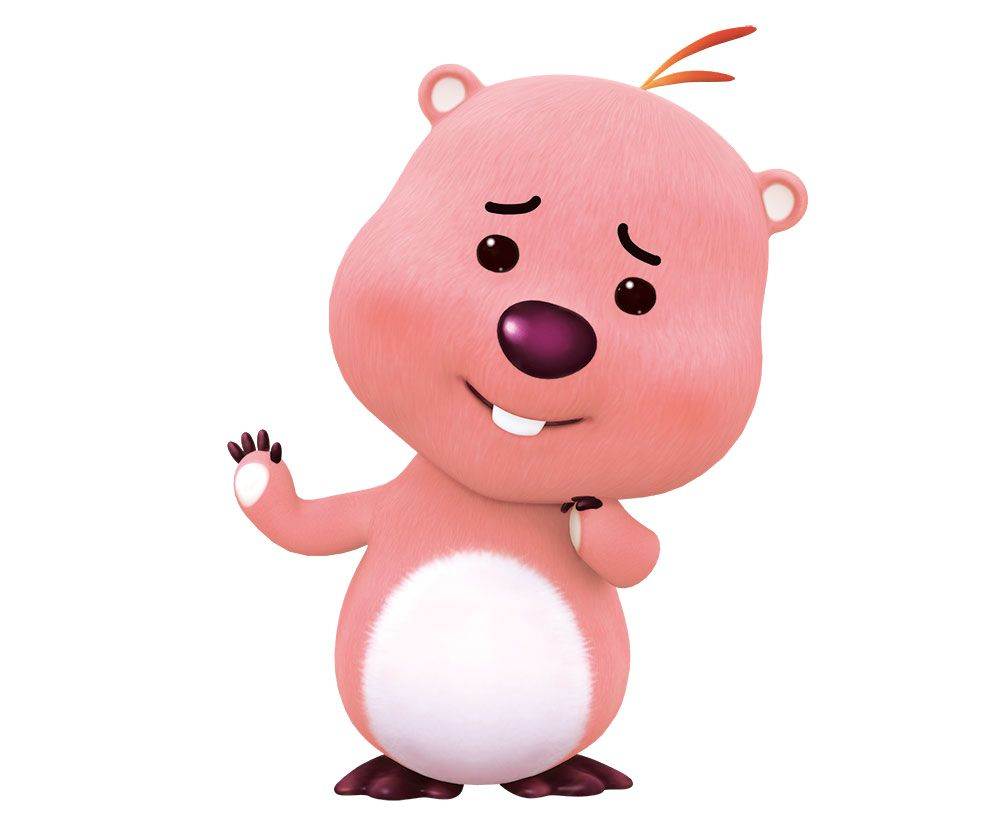

<!DOCTYPE html>
<html lang="en">
<head>
    <meta charset="UTF-8">
    <meta http-equiv="X-UA-Compatible" content="IE=edge">
    <meta name="viewport" content="width=device-width, initial-scale=1.0">
    <title>ani</title>
    <style>
        /* 요소를 이동할 때 사용하는 속성 */
        /* translate */
        /* .movex:hover {
            transform: translateX(50px);
        }
        .movey:hover {
            transform: translateY(30px);
        }
        .movexy:hover {
            transform: translate(10px,20px);
        } */

        /* 확대/축소 */
        /* scale */
        /* .origin {
            width: 210px;
            height: 200px;
            border: 1px solid black;
            margin: 40px;
        }
        .scalex:hover {
            transform: scaleX(1.2);
        }
        .scaley:hover {
            transform: scaleY(1.2);
        }
        .scale:hover {
            transform: scale(0.7);
        } */


        /* 2 */
        /* 회전 */
        /* rotate */
        /* .origin {
            width: 210px;
            height: 200px;
            border: 1px solid black;
            float: left;
            margin: 40px;
            perspective: 100px;
        }
        .scalex:hover {
            transform: rotateX(45deg);
        }
        .scaley:hover {
            transform: rotateY(45deg);
        }
        .scale:hover {
            transform: rotateZ(45deg);
        }  */


        /* 3 */
        /* 지정 조건에 맞는 변화 */
        /* transition-xxx */
        /* .tr1{
            width: 100px;
            height: 100px;
            background-color: blueviolet; */
            /* transition-property: width,height;
            transition-duration: 2s,1s; */
            /* 밑(height)으로 1초 옆(width)으로 2초 길어짐 */
            /* transition-property: background-color, transform, width, height;
            transition-duration: 2s,3s;
            transition-delay: 0.5s;

        } */

        /* .tr1:hover{
            width: 200px;
            height: 200px;
            background-color: orange;
            transform: rotate(180deg);
        } */

        div {
            width: 100px;
            height: 100px;
            background-color: aqua;
            animation-name: change-bg;
            animation-duration: 3s;
            animation-delay: 0.5s;
            
        }
        
        @keyframes change-bg {
            /* from ~ to */
            from {
                background-color: aquamarine;
                border: 1px solid black;
            }
            to {
                background-color: lightpink;
                border: 2px double yellowgreen;
                border-radius: 50%;
            }

            /* 0% ~ 100% */
            /* 0% {

            }
            50% {

            }
            100% {

            } */
        }

    </style>
</head>
<body>
    <!-- 4 -->
    <div></div>


    <!-- 3 -->
    <!-- <div class="tr1"></div>  -->
    

    <!-- 2 -->
    <!-- <div class="origin">
        <div class="scalex">
            
        </div>
    </div>
    <div class="origin">
        <div class="scaley">
            
        </div>
    </div>
    <div class="origin">
        <div class="scale">
            
        </div>
    </div> -->


    <!-- <div class="movex"></div>
    <br><br><br>
    <div class="movey"></div>
    <br><br><br>
    <div class="movexy"></div> -->
</body>
</html>